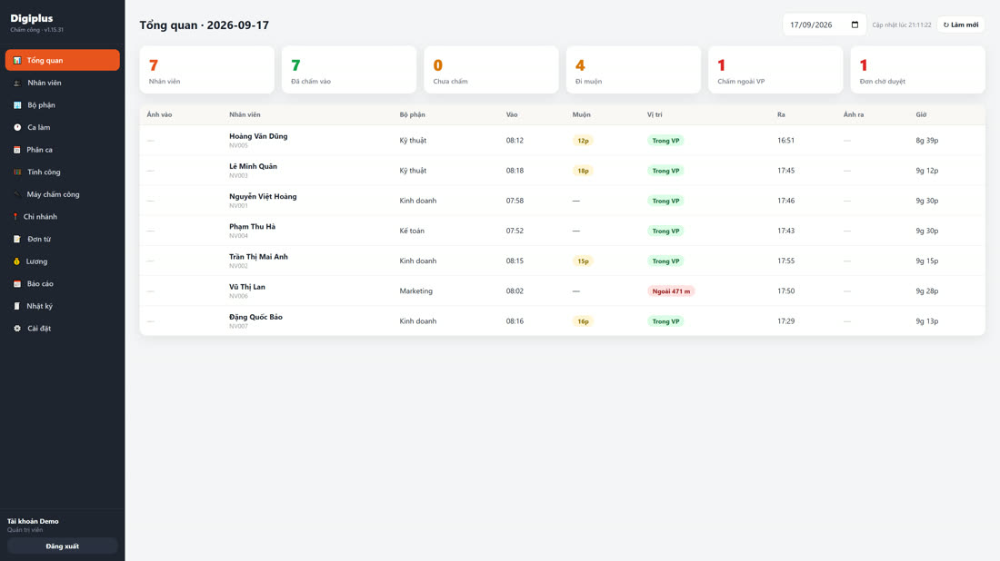
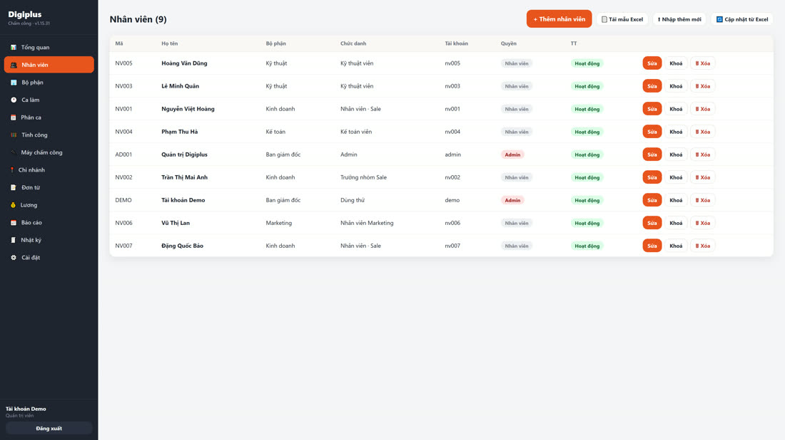
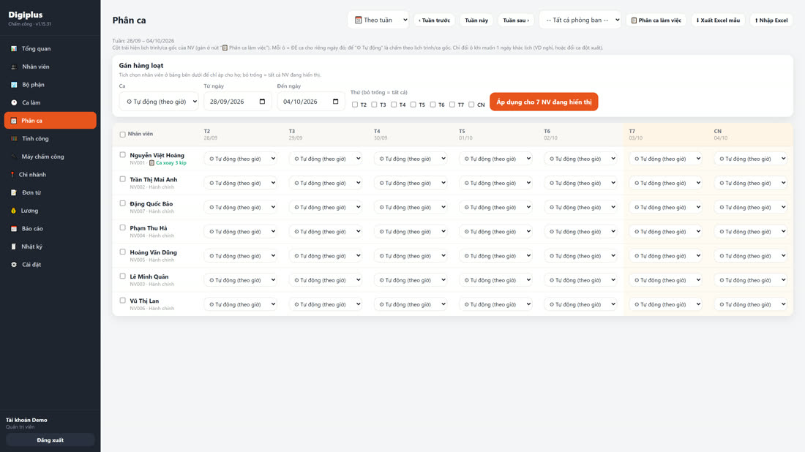
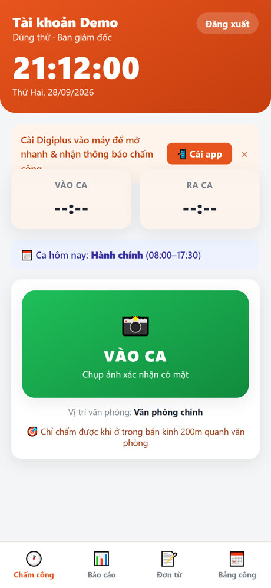
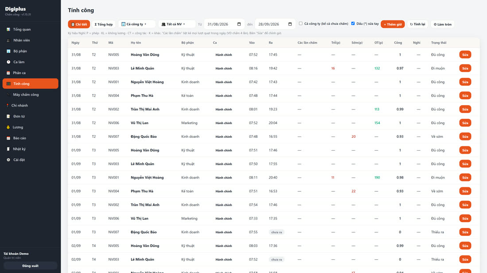
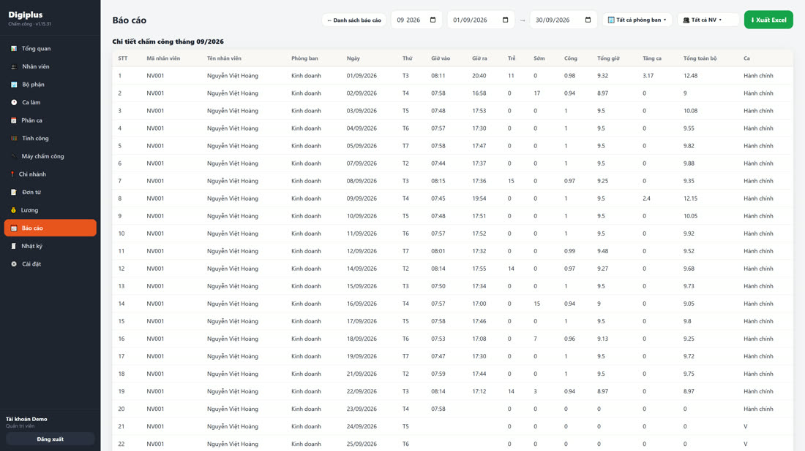

Đăng nhập & giao diện quản lý
- Mở trang quản lýTrên máy tính, vào địa chỉ phần mềm rồi thêm /admin (VD http://192.168.1.50:8686/admin).
- Đăng nhậpLần đầu dùng admin / admin123. Vào Cài đặt đổi mật khẩu ngay.
- Làm quen menu tráiTổng quan · Nhân viên · Bộ phận · Ca làm · Phân ca · Tính công · Máy chấm công · Chi nhánh · Đơn từ · Lương · Báo cáo · Nhật ký · Cài đặt.

Khai báo bộ phận & chức danh
- Vào mục Bộ phậnThêm các phòng ban (VD Kinh doanh, Kỹ thuật, Kế toán). Có thể tạo bộ phận cha – con.
- Thêm chức danhVD Nhân viên, Trưởng nhóm, Kế toán trưởng — để chọn nhanh khi khai báo nhân viên.
Khai báo nhân viên
Cách 1 — thêm từng người; Cách 2 — nhập hàng loạt bằng Excel.
- Thêm nhân viênMục Nhân viên → + Thêm nhân viên. Điền Mã NV, Họ tên, Bộ phận, Chức danh, Tài khoản/Mật khẩu đăng nhập app.
- Số ID máy (nếu dùng máy chấm công)Điền Số ID máy trùng số đăng ký vân tay trên máy để khớp đúng người.
- Phân quyền (nếu là quản lý)Chọn vai trò Quản lý/Admin và tích các chức năng được dùng (ẩn với nhân viên thường).
- Nhập bằng Excel (hàng loạt)Bấm 📄 Tải mẫu Excel → điền danh sách → ⬆ Nhập thêm mới hoặc 🔄 Cập nhật từ Excel. Bỏ trống Mật khẩu → mặc định 123456; bỏ trống Tài khoản → lấy theo Mã NV.

Khai báo ca làm việc
- Tạo caMục Ca làm: đặt tên, giờ vào, giờ ra. VD Hành chính 08:00–17:30.
- Cho phép muộn/sớmĐặt ngưỡng đi muộn, về sớm (phút) — trong ngưỡng thì không tính lỗi.
- Nghỉ giữa ca, tăng caTrừ giờ nghỉ trưa; bật tính tăng ca (ở lại tối thiểu bao nhiêu phút mới tính OT).
- Ca qua đêmChỉ cần đặt giờ ra nhỏ hơn giờ vào (VD 22:00 → 06:00) — hệ thống tự hiểu qua ngày hôm sau.
- Lịch trình (ca xoay)Gom nhiều ca (sáng/chiều/đêm) thành 1 lịch trình để gán cho nhân viên làm ca xoay.
Phân ca cho nhân viên
Mặc định hệ thống tự tìm ca theo giờ chấm. Khi cần chỉ định cứng thì phân ca.
- Ca mặc định trên hồ sơGán 1 ca cố định cho nhân viên hành chính.
- Phân ca hàng loạtMục Phân ca: chọn phòng ban → chọn ca → chọn khoảng ngày/thứ → Áp dụng cho cả nhóm chỉ vài cú nhấp.
- Phân ca bằng Excel (cả tháng)Xuất Excel mẫu (lưới NV × ngày) → điền mã ca vào ô cần đổi (để trống = tự động) → nhập lên.

Nhân viên chấm công
- Mở app, đăng nhậpBằng tài khoản được cấp (cùng mạng nếu bản LAN).
- Bấm "Vào ca" → chụp ảnhApp chụp selfie, ghi GPS, đóng dấu địa chỉ + giờ lên ảnh.
- Hết ca bấm "Ra ca"Chụp ảnh lần hai — hệ thống tự tính giờ & công.
Bằng máy chấm công: nhân viên quẹt vân tay/khuôn mặt/thẻ trên máy — dữ liệu tự về phần mềm theo Số ID.

Cài app lên điện thoại & đưa ra màn hình chính
Không cần tải từ CH Play / App Store — mở link công ty cấp trên trình duyệt là chấm được. Muốn tiện như một app riêng thì "cài" ra màn hình chính:
📗 Android (Chrome)
- Mở link chấm công bằng ChromeĐăng nhập tài khoản được cấp.
- Bấm nút "📲 Cài app"Nút hiện sẵn trong phần mềm — bấm là thêm ra màn hình chính (một chạm).
- Hoặc dùng menu ChromeBấm dấu ⋮ (góc trên phải) → Thêm vào Màn hình chính → Thêm.
📘 iPhone (Safari)
- Mở link bằng SafariPhải là Safari (không phải Chrome trên iPhone).
- Bấm nút Chia sẻBiểu tượng ô vuông có mũi tên hướng lên, ở thanh dưới.
- Chọn "Thêm vào MH chính"(Add to Home Screen) → Thêm. Biểu tượng xuất hiện như một ứng dụng.
Bật lại quyền Camera / Vị trí nếu lỡ chặn
App cần Camera (chụp ảnh chấm) và Vị trí (GPS). Nếu lỡ bấm "Không cho phép / Block", việc chấm công sẽ báo lỗi — bật lại như sau:
📗 Android (Chrome)
- Bấm ổ khoá 🔒 cạnh địa chỉ webTrên trang chấm công → chọn Quyền / Permissions.
- Bật Máy ảnh & Vị tríGạt Cho phép (Allow) cho cả hai → tải lại trang.
- Nếu không thấy mục đóCài đặt điện thoại → Ứng dụng → Chrome → Quyền → bật Máy ảnh + Vị trí. Đồng thời bật Dịch vụ vị trí (GPS) của máy.
📘 iPhone (Safari)
- CameraCài đặt → Safari → Máy ảnh → chọn Cho phép (Allow).
- Vị tríCài đặt → Quyền riêng tư & Bảo mật → Dịch vụ định vị → bật → kéo tới Safari → chọn "Khi dùng ứng dụng".
- Tải lại trangMở lại trang chấm công; khi hỏi quyền bấm Cho phép.
Duyệt / sửa / thêm / xoá giờ chấm
Khi nhân viên quên chấm, chấm nhầm hoặc nghịch máy — quản lý chỉnh trong mục Tính công.
- Thêm giờ (quên chấm)Mục Tính công → + Thêm giờ: chọn NV, ngày, giờ vào/ra, ghi lý do.
- Sửa giờBấm Sửa ở dòng cần chỉnh → đổi giờ vào/ra → Lưu.
- Xoá giờ chấm nhầmTrong ô Sửa có nút 🗑 Xoá giờ — xoá hẳn bản ghi ngày đó.
- Xoá 1 lượt quẹt lẻ trên máyMục Máy chấm công → Xem quẹt → bấm 🗑 ở lượt quẹt nhầm/nghịch.
Tính công
- Xem lưới côngMục Tính công: mỗi dòng là 1 NV × 1 ngày, có giờ vào/ra, đi muộn, về sớm, tăng ca, số công.
- Lọc theo phòng ban / nhân viên / khoảng ngàyChọn để xem đúng nhóm cần.
- Tính lại côngSau khi đổi ca/cấu hình hoặc sửa giờ → bấm ↻ Tính lại để cập nhật số công.
- Cấu hình làm trònĐặt số lẻ thập phân + kiểu làm tròn (lùi/tới/gần nhất) cho số công.

Đơn từ / nghỉ phép
- Nhân viên gửi đơnTrên app: xin nghỉ phép / không lương / công tác, chọn khoảng ngày + lý do.
- Quản lý duyệtMục Đơn từ: duyệt hoặc từ chối. Đơn được duyệt sẽ hiện đúng ký hiệu (P/KL/CT) trong bảng công.
Báo cáo & xuất Excel
Mục Báo cáo: chọn loại + khoảng ngày (+ phòng ban / nhân viên cụ thể) → xem trước → Xuất Excel.
| Báo cáo | Dùng để |
|---|---|
| Tổng quan | Xem nhanh hôm nay (hoặc ngày đã chọn): ai đi làm/đi muộn/vắng, chấm ngoài VP, kèm ảnh. |
| Bảng công ngang | Lưới NV × ngày cả tháng — nhìn tổng thể chấm công. |
| Chi tiết chấm công | Mỗi NV × mỗi ngày 1 dòng đầy đủ (vào/ra/trễ/sớm/công/tăng ca/ca). |
| Giờ công & tăng ca | 3 dòng/NV: giờ vào–ra / giờ công / giờ tăng ca theo từng ngày. |
| Giờ vào/ra đầu-cuối | Giờ vào sớm nhất, ra muộn nhất + số lần chấm mỗi ngày. |
| Đi muộn / về sớm · Tăng ca | Lọc riêng các trường hợp muộn/sớm hoặc tăng ca. |
| Vắng mặt / nghỉ phép | Thống kê vắng, phép, không lương theo NV. |
| Giờ sửa/thêm bằng tay | Vết các lần quản lý chỉnh giờ (ai, khi nào) — kiểm soát. |
| Bảng lương | Tính lương từ số công (xem mục dưới). |

Cấu hình & xuất bảng lương
- Khai lương từng ngườiLương cơ bản/tháng, số ngày công chuẩn, phụ cấp, hệ số tăng ca (ngày thường / cuối tuần / lễ). Lương theo giờ nếu dùng chế độ tính theo giờ.
- Đặt kỳ lươngTrong Cài đặt: ngày bắt đầu kỳ lương (VD chốt ngày 26).
- Xuất bảng lươngMục Lương / báo cáo Bảng lương: hệ thống tự tính Số công × đơn giá + tăng ca + phụ cấp → xuất Excel.
Các cài đặt quan trọng
- Định vị (geofence): bật "Chỉ cho chấm trong bán kính chi nhánh" để chặn chấm ngoài vùng; đặt bán kính cho từng chi nhánh.
- Chống chấm hộ: bật "Mỗi tài khoản chỉ chấm trên 1 điện thoại" — đổi máy phải admin duyệt.
- Chế độ tính công: "Theo ca" (đầy đủ muộn/sớm/tăng ca) hoặc "Chỉ tính theo giờ" (tổng giờ, hợp quán/cửa hàng).
- Bỏ qua lần chấm trùng trong N phút: chống double-tap / quẹt liên tiếp.
- Ngày cuối tuần, nghỉ lễ: khai để tính công & tăng ca đúng.
- Tự sao lưu: bật sao lưu hằng ngày (giữ N bản gần nhất).
→ Cài đặt & kết nối máy chấm công: xem Hướng dẫn cài đặt bản LAN.
Câu hỏi thường gặp (sử dụng)
Nhân viên quên chấm thì làm sao?
Quản lý vào Tính công → "+ Thêm giờ" cho ngày đó (ghi lý do). Bản ghi thêm tay được đánh dấu (*) và có vết ai thêm/khi nào.
Chấm nhầm/nghịch, muốn xoá giờ đó?
Vào Tính công → Sửa dòng đó → "🗑 Xoá giờ". Nếu là lượt quẹt nhầm trên máy: Máy chấm công → Xem quẹt → 🗑 từng lượt.
Làm ca xoay/ca đêm tính công thế nào?
Gom các ca vào một lịch trình rồi gán cho nhân viên; hệ thống tự chọn đúng ca theo giờ chấm, kể cả ca qua đêm (đặt giờ ra < giờ vào).
Nhân viên có xem được công của người khác không?
Không. Mỗi nhân viên chỉ thấy dữ liệu của mình. Chỉ Admin/Quản lý (theo phân quyền) mới thấy toàn công ty.
Xuất báo cáo cho riêng một phòng ban được không?
Được. Trong bộ lọc báo cáo, chọn phòng ban (hoặc chọn nhiều người cụ thể) rồi Xuất Excel.
"Chấm ngoài văn phòng" là ngoài đâu?
Là ngoài bán kính của chi nhánh gần nhất mà nhân viên được phép chấm. Có bật chặn hay chỉ cảnh báo là tuỳ cài đặt geofence.
Số công lẻ (VD 0.94) là gì?
Là số công quy đổi theo giờ làm thực tế/độ dài ca và cấu hình làm tròn. Có thể chỉnh số lẻ & kiểu làm tròn trong Tính công.